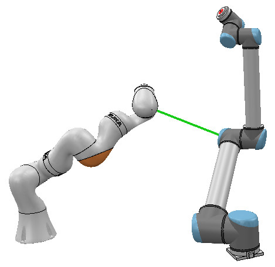

|
Distance calculationCoppeliaSim can measure the minimum distance between two measurable entities in a flexible way. The calculation is an exact minimum distance calculation.  [Minimum distance calculation between two manipulators] Using the API methods sceneObject:checkDistance and collection:checkDistance, one can easily calculate the minimum distance between entities, for instance between a robot and its environment, from within a simulation script, in each simulation step: #python
def sysCall_init():
sim = require('sim-2')
robotBase = sim.self:getObject('/robotModelName')
self.robotCollection = sim.scene:createObject({'type': 'collection'})
self.robotCollection:addItem(robotBase, {'mode': 'tree'})
def sysCall_sensing():
result, distance, dist1, dist2, objectPair = self.robotCollection:checkDistance(sim.handle_all)
if result:
txt = 'Robot clearance is ' + str(distance) + 'm, minimum distance object pair is ' + str(objectPair)
print(txt)
--lua
function sysCall_init()
sim = require('sim-2')
local robotBase = sim.self:getObject('/robotModelName')
robotCollection = sim.scene:createObject({type = 'collection'})
robotCollection:addItem(robotBase, {mode = 'tree'})
end
function sysCall_sensing()
local result, distance, dist1, dist2, objectPair = robotCollection:checkDistance(sim.handle_all)
if result then
local txt = 'Robot clearance is '.. distance
txt = txt..'m, minimum distance object pair is '..getAsString(objectPair)
print(txt)
end
end
One can also display the measured minimum distance, as a colored segment in the scene: #python
def sysCall_init():
sim = require('sim-2')
robotBase = sim.scene:getObject('/robotModelName')
self.robotCollection = sim.scene:createObject({'type': 'collection'})
self.robotCollection:addItem(robotBase, {'mode': 'tree'})
self.distanceSegment = sim.scene:createObject({'type': 'marker', ['marker.type']: 'lines', 'itemColor': [0.0, 1.0, 0.0, 1.0]})
def sysCall_sensing():
result, distance, dist1, dist2, objectPair = self.robotCollection:checkDistance(sim.handle_all)
if result:
self.distanceSegment:clearItems()
self.distanceSegment:addItems(dist1:horzcat(dist2)) TODO
--lua
function sysCall_init()
sim = require('sim-2')
local robotBase = sim.self:getObject('/robotModelName')
robotCollection = sim.scene:createObject({type = 'collection'})
robotCollection:addItem(robotBase, {mode = 'tree'})
distanceSegment = sim.scene:createObject({type = 'marker', ['marker.type'] = 'lines', itemColor = Color('green')})
end
function sysCall_sensing()
local result, distance, dist1, dist2, objectPair = robotCollection:checkDistance(sim.handle_all)
if result then
distanceSegment:clearItems()
distanceSegment:addItems(dist1:horzcat(dist2))
end
end
CoppeliaSim's distance calculation functionality is also available as stand-alone routines via the Coppelia geometric routines. |